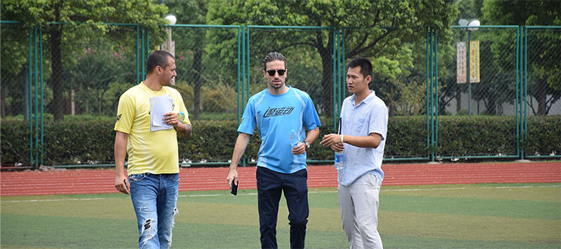
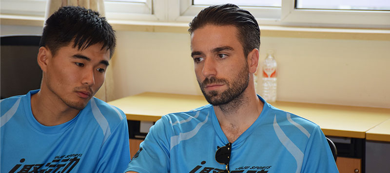
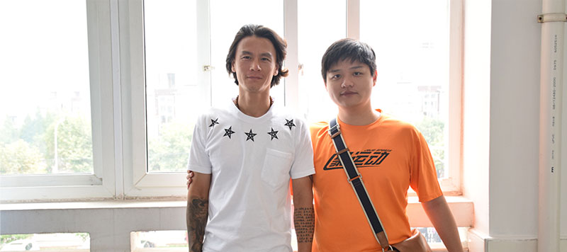
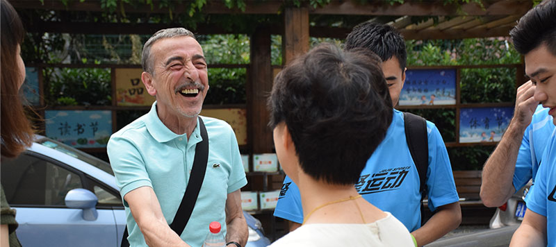
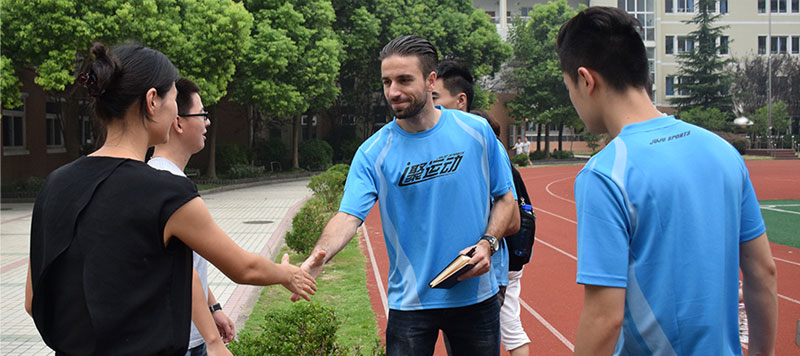
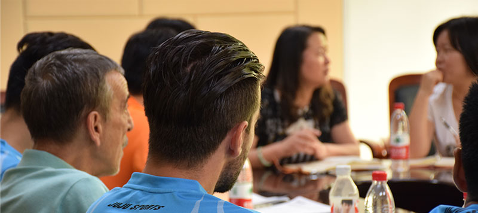
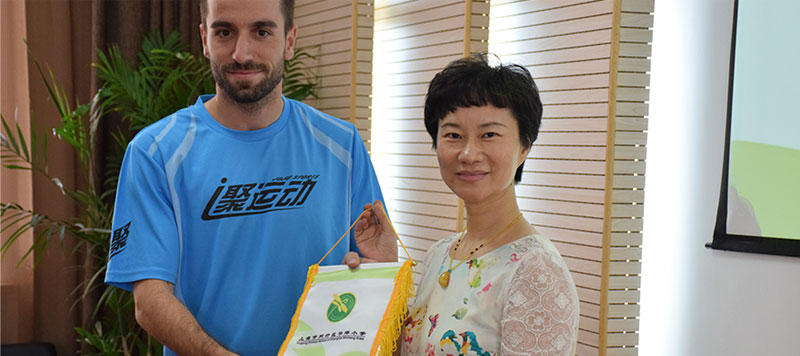

聚运动闵行区见面会，“送教入校”即将全面启动
上周五，聚运动“送教入校”项目团队一行拜访了闵行区5所对接中小学，与各位对接学校领导和老师见面的同时也对场地进行实地考察。由于行程原因，和闵行区对接的执行教练没能赶上见面会，因此整个参观团队由小可可维奇带领。在今后一年里，聚运动团队将和闵行区学校进行紧密的合作，推动校园足球深入课堂。
吴泾三小
吴泾第三小学是整个行程的第一站，提早到达的小编先进入球场一睹为快。尽管并不大，但球场草坪的质量很高，而且整个场地与远处宏伟的氯碱化工的巨大烟囱以及闵浦大桥引桥相映衬，工业文明的壮景和人类原生的对竞技的追求形成强烈对比，能让人感到一股非凡的气势。
闵行区教育局领导王琼老师和吴泾三小的顾校长也早早来到学校，等待聚运动团队的到来。在亲密的合影后，顾校长带着聚运动团队参观了操场和其他室内设施。
顾校长亲切地介绍了吴泾三小的女足特色，目前学校拥有三个女子梯队。在市级比赛中吴泾三小的表现一直可圈可点，但对现状并不满足的的顾校长希望外教团队能帮助吴泾三小的校队更上一个台阶。小可可维奇表示将会安排优秀的教练进驻闵行，争取带领吴泾三小的各年龄段校队在区级和市级比赛中取得更出色的成绩。
闵行三中（福山实验学校）
行程的第二站是闵行三中，由于校舍大修，闵行三中将在未来一年里借用福山实验学校的场地。操场上由于有初一的学生军训，所以识趣的小编并没有对场地进行拍摄。
闵行三中的颛孙校长带领体育教研组全员在会议室和聚运动团队见了面。会上颛孙校长亲切地向大家介绍了学校情况体育教研组的成员，成员包括了两名前职业球员，其中更有曾在上海中远队踢球的前职业球员武明，吸引了聚运动的小伙伴们纷纷与他合影。
尽管未来一年只能“客场作战”，但颛孙校长对“送教入校”项目非常支持，他表示希望“送教入校”能一直贯彻下去，让更多的小朋友得到足球启蒙，得到提高，得到晋升。他还希望，校队中能尽快走出优秀球员，晋升到市级的队伍中。
江川路小学
江川路小学是本次行程的第三站，马校长亲自在校门口进行迎接。江川路小学被居民区包围，由于尚未开学，校园显得非常幽静。
学校的人工草场质量极高，室内设施也一应俱全。根据马校长介绍，目前江川路小学校队刚组建不久，没参加过区级和市级的比赛，由于“送教入校”的活动目前非常火热，借着优秀的场地条件，一贯支持青少年体育发展的马校长也想通过这个机会来推动校园足球的建设。
江川路小学出色的硬件和教职工们的热情支持让聚运动团队非常鼓舞，小可可维奇表示外教团队会全力配合，用最热诚的足球情怀和最专业的青少年足球理念帮助学校丰富校园体育建设。
聚运动团队当天的午餐在江川路小学解决，学校食堂特地准备了美味可口的午餐，连小可可维奇都连呼好吃，看来我们的外教和助理教练未来要有口福了。
闵行区中心小学
告别江川路小学，下午的第一站是闵行区中心小学。校园景色非常优美，全长250米的足球场毗邻了两个篮球场，可利用的空间非常大。
我们受到了金校长和学校老师们的热情接待。拥有1042名学生的闵行中心小学目前已经组建了U9和U11两个年龄组的女子校队，虽然此前没有参加过区级和市级比赛的经验，但在去年校园足球联盟的评比中获得了第八名的好名次。
根据金校长的介绍，闵行区中心小学的校园环境在整个上海市也名列前茅，有“花园学校”的美誉。自从1987年创建，1994年改造，校园里的一草一木都是教职工亲手种下的。金校长表示虽然校园足球开展较晚，但只要潜心耕耘，加以时日，校园足球也能像闵行区中心小学的一草一木一样，渐渐茁壮成林，成为一道道美丽的风景。
华坪小学
华坪小学是当天考察的最后一站。同样，我们一行还没有踏进校门，就受到了王校长热情的迎接。

根据王校长介绍，华坪小学有雨水储存系统，整个系统可以收集储存15吨水，可供厨卫等方面的使用。此外还有太阳能发电系统和水资源知识特色教室先进的可再生系统让聚运动一行人大开眼界。华坪小学的其他设施同样非常先进，小型的曲棍球场更让足球培训的场地有了更多的选择。 
热情的王校长和老师们为外教们准备了许多小礼物，包括徽章和交换的锦旗，显示了华坪小学对校园足球的热情。
交换礼物后，王校长对学校情况做了更深入的介绍，体育教研组有两名退役球员还有一名退役曲棍球运动员，师资力量雄厚，聚运动的外籍教练团队将与这些前运动员紧密合作，用最专业的足球理念提升校园足球的水平，丰富校园的足球文化，完善校园体育建设。
参观完华坪小学后，整个闵行区的考察行程也告一段落。各学校的校长和教师都对聚运动的外教团队非常期待，他们展现出的热情也让团队上下感到充满动力，尽管未来一年我们必然会面临很多困难，聚运动团队将同各方紧密配合，为推动校园足球的发展贡献力量。